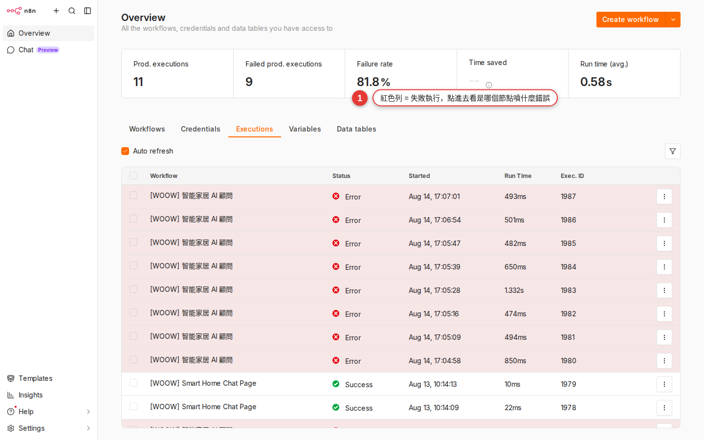

常見錯誤排錯
節點紅色框、Timeout、Credential 失效、429 Rate limit、Sub-workflow 找不到——這附錄是「當你卡住了」的速查表。書籤存起來，每次遇到不對就翻到這裡對症狀、抄解法，把 workflow 拉回綠色。
為什麼要有這附錄
這附錄不是教學章——是一本「症狀 → 該做什麼」的速查手冊。前面 第 17 章教你怎麼建立錯誤處理機制（Error workflow、Retry、Wait）；這附錄補的是另一半：當錯誤已經跳出來，你要怎麼從錯誤訊息反推「是哪一類問題、下一步做什麼」。
使用方式：
- 存書籤——你 workflow 掛的時候，第一件事就是回到這頁。
- 對症狀，不要對訊息字面——同一個錯誤 n8n 有時顯示成
ETIMEDOUT、有時顯示成Request timed out，看下面各段的「症狀」欄找最像的。 - 先做「三個快速自檢」——下一段。八成的問題不需要看完整份速查表，三步就能定位。
遇到錯誤，先跑三個快速自檢
不管什麼錯誤，先花 30 秒做這三件事，八成能直接定位問題：
-
workflow 是不是 Active（右上角 toggle 綠色）？
打開該 workflow → 看右上角 Active toggle。如果是灰色（Inactive），Schedule Trigger 不會跑、Webhook 只有 Test URL 能收——這是「明明沒錯但也沒動」的第一名原因。切成綠色（Active）。
-
Executions 頁最新一筆是紅還是綠？
左側主導覽 Executions（或該 workflow 內的 Executions tab）。紅色 = 錯了，點進去看是哪個節點爆的、錯誤訊息寫什麼。綠色 = 有跑成功，那你其實沒錯，可能只是誤會（例：Schedule 還沒到時間）。

圖 附B-1Executions history：一列一筆執行，紅色 = 失敗，點進去可看是哪個節點爆的與錯誤訊息。 -
該節點的 Credential 還通嗎？
左側 Credentials → 找到該節點用的 credential → 點進去 → 右上有個 Reconnect 或測試按鈕。跑一次看綠色 tick 還在不在。八成的「跑很久突然開始錯」都是 credential 過期。
症狀 1：節點紅色框
症狀：打開 workflow canvas，發現某個節點外框是紅色（不是連線紅，是節點本身框紅），或節點右上角有紅色驚嘆號。點進去參數面板，某些欄位有紅字說明。
| 可能原因 | 發生頻率 | 怎麼看出來 |
|---|---|---|
| Credential 沒選或選到被刪掉的 | 約 60% | 參數面板頂端 Credential 欄空白，或顯示 No credential selected |
| 必填欄位（Required）沒填 | 約 25% | 某欄位下方紅字寫 This field is required |
| 節點版本升級，舊參數對應不上 | 約 10% | 參數面板頂端有黃色 banner「Newer version available」或參數欄消失 |
| Expression 語法錯（大括號沒閉合等） | 約 5% | Expression 欄位下方有紅字，preview 顯示 [Expression error] |
修法：
-
點該節點打開參數面板
看到底哪個欄位是紅字——n8n 會直接告訴你缺什麼。
-
Credential 欄空白就先補
下拉選現成的、或按右邊 + 現場新建（參考 第 13 章）。
-
必填欄位補齊
每一個底下有紅字的欄位都要填。Expression 模式 vs Fixed 模式搞混也會噴這個錯。
-
版本升級的話，重新選節點
刪掉舊節點 → Tab 叫節點抽屜 → 搜尋同樣的節點名（例：
Slack）→ 選新版重連——n8n 不會自動幫你搬參數，通常要重填一次。
症狀 2：401 Unauthorized
症狀：Executions 紅色 → 點該節點 → 錯誤訊息含 401、Unauthorized、Invalid credentials、Authentication failed。最常出現在 HTTP Request、Slack、Gmail、Google Sheets 這類節點。
意思：對方 API 說「你是誰？我不認識你」——不是你打錯位址，是認證沒過。三種可能：
| 可能原因 | 典型情況 |
|---|---|
| Credential 一開始就填錯 | API key 貼漏字、密碼打錯、Bearer token 少了 Bearer 前綴 |
| OAuth token 過期沒 refresh | Slack、Google、Notion 等 OAuth 授權跑了幾週後突然 401，通常是 refresh token 也過期或被 revoke |
| API key 被對方後台 revoke | 同事去 API 後台按了「重生 key」、rotate 政策自動換 key、被安全系統偵測異常自動禁用 |
修法：
-
左側 Credentials → 找到該 credential
從節點面板 Credential 欄的名字回找。
-
OAuth 類型：按 Reconnect 重新授權
會彈出對方（Slack / Google）的授權視窗，走完流程 → 回來看綠色 tick。
-
API key 類型：去對方後台重新產生 key，貼回來
例：Notion → Settings → Integrations → 產生新 secret；貼進 n8n 該 credential → Save → 按 Test。
-
回到 workflow 重跑一次
Executions 頁點 Retry（該次 execution 右上），或直接 Execute Workflow 手動觸發一次。
症狀 3：403 Forbidden
症狀：錯誤訊息含 403、Forbidden、Insufficient permissions、Missing scope。
意思：對方認識你（credential 對），但說「你沒權限做這件事」。跟 401 的差別很重要：
| 錯誤碼 | 意思 | 修哪裡 |
|---|---|---|
401 Unauthorized |
不知道你是誰 | Credential（重連 / 換 key） |
403 Forbidden |
知道你是誰但你不能做這件事 | 對方後台的權限 / OAuth scope |
常見情境：
- OAuth 授權時只給了 read scope，但你在 workflow 要 write——例：Google Sheets 只授權 read-only，你節點卻選 Append Row。
- 你的公司 Google Workspace 管理員關掉了某 API 的存取（例：Gmail API 對 service account 不開放）。
- Slack bot 沒被邀請進頻道——bot 有
chat:write但頻道沒它就不能發。 - API 後台把該 key 的權限降級了。
修法：
-
看錯誤訊息裡的 missing scope 名字
對方通常會明講缺哪個 scope，例：
Missing scope: files.write。 -
回 Credentials 頁 → Reconnect，勾更多 scope
OAuth 授權視窗會列出要授權哪些權限——這次多勾。
-
不是 OAuth 就去對方後台加權限
Slack: 邀 bot 進頻道；Notion: 分享 page 給 integration；Google Workspace: 找 IT 開放。
症狀 4：404 Not Found
症狀：錯誤訊息含 404、Not Found、Resource not found。最常出現在 HTTP Request 節點——你打了一個對方伺服器上不存在的位址。
90% 的原因是 URL 拼錯。檢查清單：
| 檢查項 | 常見錯法 |
|---|---|
| URL typo | /user/ vs /users/、少一個 s、多一個 / |
| API 版本前綴 | 官方文件寫 /v1/messages，你只打 /messages |
| 環境搞混 | 打 production URL 但 credential 是 sandbox（或反過來） |
| Expression 塞的 ID 是空 | URL 是 /users/{{ $json.id }}，但上游沒有 id 欄位，結果打成 /users/undefined |
| API 真的下線／改路徑 | 舊文件寫的 endpoint 已 deprecate，該去對方文件看新版 |
修法：
-
把 URL 貼到 Postman / curl 手動打一次
用一樣的 header、一樣的 auth，看是否 404。如果 Postman 也 404 → 是 URL 問題；如果 Postman 200 但 n8n 404 → 是 n8n 的 Expression 塞錯了。
-
Expression 塞的部分——打開節點 Output 面板核對
看上一個節點的實際
$json有沒有你抓的那個欄位。第 14 章教過怎麼看。 -
查對方 API 官方文件確認 endpoint
Google 搜 「[服務名] API [動作]」找最新的官方文件——第三方部落格文章常常過時。
症狀 5：429 Too Many Requests
症狀：錯誤訊息含 429、Too Many Requests、rate limit exceeded、quota exceeded。
意思：你打太快了，對方 SaaS 為了保護服務、要你降速。不是你錯了——只是打的節奏跟對方限速政策不合。
三種修法（可以並用）：
| 做法 | 適用情境 | 怎麼設 |
|---|---|---|
| 加 Wait 節點降速 | 批量處理多筆資料（例：對 500 個客戶各發一封通知） | 每筆之後加 Wait 1 second，或每 N 筆 wait 一次 |
| 用 Split In Batches 分批 | 大量資料一次來（例：從 Sheet 讀 1000 列） | Split In Batches 節點 → batch size 10 → 迴圈中間夾 Wait |
| 節點開 Retry on fail | 偶發 429（大部分時候不會，但偶爾撞到） | 節點 Settings → Retry On Fail = ON → Max Tries 3 → Wait Between Tries 5000ms 以上 |
典型的組合 pattern：
Google Sheets (讀 500 列)
↓
Split In Batches (batch size = 10)
↓
HTTP Request (打對方 API) ← 開 Retry on fail, 5000ms
↓
Wait (1 second)
↓
(回到 Split In Batches 下一批)Retry-After header（秒數或 HTTP date）——HTTP Request 節點可以在 Error output 讀 $response.headers['retry-after'] 動態決定 Wait 多久，比死等一個固定秒數精準。症狀 6：5xx 錯誤 與 Timeout
症狀：錯誤訊息含 500／502 Bad Gateway／503 Service Unavailable／504 Gateway Timeout，或 ETIMEDOUT／ECONNRESET／Request timed out／Execution timed out／Socket hang up。
意思：這一堆幾乎都不是你的錯——對方 server 掛了／過載、或網路連不通、或你等對方等太久放棄。判斷是哪一種：
| 錯誤特徵 | 是什麼 | 怎麼修 |
|---|---|---|
500／502／503／504 |
對方 server 暫時掛掉／過載 | 等幾分鐘 → Executions 頁 Retry；查對方 status page；節點開 Retry on fail |
ETIMEDOUT／Request timed out（單一節點） |
對方 API 太慢，超過節點 timeout 設定 | 節點 Add Option → Timeout 拉大（例：30000ms） |
Execution timed out（整條 workflow） |
workflow 跑太久整體被切 | Workflow Settings → Timeout Workflow 拉長；治本要拆 sub-workflow |
ECONNREFUSED／ENOTFOUND |
網路連不到對方（DNS 錯、防火牆擋） | 檢查 URL 拼字、對方 IP 是否在 allowlist、公司防火牆 outbound 有沒有擋 |
對付 5xx 的黃金 pattern：
-
先重跑一次
Executions 頁該筆 → 右上 Retry；5xx 大多幾分鐘後對方就恢復了。
-
查對方 Status Page
Google 搜 「[服務名] status」。常用：
status.slack.com、www.githubstatus.com、www.google.com/appsstatus。有 outage 就等對方修好，沒的話再往下查。 -
節點開 Retry on fail
5xx 大多是暫時性錯誤，開 Retry（Max Tries 3、Wait Between Tries 2000ms）通常自動好——之後根本不會通知你。第 17 章教的最實用 pattern。
Slack (renew 2027-01)）proactive 提前換。症狀 7：Webhook 收不到 / Webhook not found
症狀：外部系統打 Webhook URL 但 workflow 沒動——Executions 頁沒新紀錄、Slack 沒發、什麼都沒發生。或對方 HTTP client 直接收到 404 Webhook not registered / The requested webhook is not registered 錯誤訊息。
三種常見原因：
| 原因 | 怎麼判斷 | 怎麼修 |
|---|---|---|
| workflow 沒 Active | 右上角 toggle 灰色（Inactive） | 切成綠色 Active |
| 對方打的是 Test URL 不是 Production URL | Test URL 路徑含 /webhook-test/、Production URL 路徑是 /webhook/；對方拿到含 -test 的網址就會遇到「聽一次就失效」 |
把 Production URL 交給對方（節點面板上方切到 Production URL 分頁複製） |
| 網路／防火牆擋掉 | 你自己 curl 打 URL 也不通 | self-hosted n8n 的話檢查 reverse proxy 設定、對外開放的 port、SSL 憑證 |
debug 步驟：
-
Webhook 節點 → 複製 Production URL
不是 Test URL！差別在路徑：Test URL 是
/webhook-test/xxx、Production URL 是/webhook/xxx。Test URL 只有你按 Listen for Test Event 時才收；workflow 設 Active 之後就只認 Production URL。 -
從外部網路用 curl 打一次
用手機熱點（避免走公司內網）：
curl -X POST https://your-n8n.com/webhook/xxx -d 'test'。收到 200 = URL 通；連不上 = 網路問題。 -
curl 通了但 Executions 沒紀錄
檢查 workflow 是不是 Active、Webhook 節點的 HTTP Method（GET vs POST）跟對方用的一致、path 有沒有拼錯。
-
curl 通了、workflow 也跑了，但下游沒動
那不是 Webhook 收不到——是下游節點的問題，回去看 Executions 是哪個節點掛的。
Webhook not registered。給外部系統設定 URL 時一定要用 Production URL（路徑 /webhook/ 沒 -test），且 workflow 必須 Active。這是 Webhook 節點的第一名踩雷。症狀 8：Sub-workflow 找不到 / Sub-workflow 內部錯誤
症狀 A（找不到）：Execute Workflow 節點報錯 Workflow not found、Could not find workflow with ID。
症狀 B（內部炸但 parent 分不清是誰）：sub-workflow 裡某節點掛了，parent 的 Execute Workflow 節點統一顯示 Error executing sub-workflow 或 Problem in sub-workflow——你看不到是哪個節點爆的，得回 Executions 找 sub-workflow 那筆單獨看。
意思：這個 Execute Workflow 節點原本指定的 sub-workflow，現在找不到——被刪、被搬 workspace、或 workflow ID 換了。
常見原因：
- Sub-workflow 被人（不小心）刪掉。
- Sub-workflow 從 Personal 搬到 Workspace（或反過來），ID 保持但存取權變了。
- 你從 A 環境（例：測試）export，import 到 B 環境（例：正式）——原本引用的 workflow ID 在 B 環境不存在。
- Sub-workflow 換了個新版本，舊 ID 被砍了。
修法：
-
打開 Execute Workflow 節點
看 Workflow 下拉欄目前指到誰。如果是空白或紅字說找不到，就是這個問題。
-
下拉重選正確的 sub-workflow
從清單挑目前存在的那條——名字對了就選。
-
Save 主 workflow
Ctrl+S 存檔——workflow ID 對應會刷新。
-
環境搬遷的話，import 後全掃一次
從 A export 的 workflow 匯到 B 之後，所有 Execute Workflow 節點都要人工重選一次；n8n 不會自動對應 ID。
-
症狀 B：sub 的錯誤要進 sub 的 Executions 看
Execute Workflow 節點的錯誤訊息只是 wrapper——真正原因在 sub-workflow 自己的 Executions 那筆。Executions 頁最上方切到 sub-workflow 名稱，找同時間戳那筆進去看。sub-workflow 錯誤預設會往上冒讓 parent 也失敗；如果不希望 parent 也掛，把 sub-workflow 的 Error workflow 設好，或 parent 端 Execute Workflow 節點 Settings 開 Continue On Fail——sub 錯了但 parent 繼續跑。
症狀 9：Expression 跑出 undefined
症狀：Slack 訊息或 email 內文出現 undefined、[object Object]、或空字串——workflow 沒錯，就是資料塞進去長歪。
意思：你在 Expression 抓的欄位路徑，實際 $json 裡不存在。三個典型錯法：
| 錯法 | 症狀 | 修法 |
|---|---|---|
| 上游節點根本沒吐這個欄位 | {{ $json.name }} → undefined |
打開上游節點 Output panel 看實際欄位叫什麼，改 Expression |
| 路徑打錯（大小寫、底線） | API 回的是 userName，你寫 username |
Output panel 複製精確欄位名（或用 n8n 的 fx picker 點） |
| item 是 array 但你當 object 抓 | 上游是 [{id:1}, {id:2}]，你寫 {{ $json.id }} 拿到 undefined |
改成 {{ $json[0].id }}，或前面加 Split Out 節點把 array 拆成多個 item |
debug 步驟：
-
Executions 頁點紅色那筆進去
或者手動 Execute Workflow 一次讓錯誤重現。
-
點該節點的上一個節點
看 Output 欄長什麼樣——JSON 結構是
{name: "..."}還是{user: {name: "..."}}還是[{name: "..."}]？ -
用 fx picker 重選欄位
Expression 欄旁邊的 fx 按鈕 → 打開 picker → 從上游節點的實際輸出點你要的欄位。picker 產出的 Expression 一定對。
-
加 Set 節點做預設值
如果上游偶爾沒該欄位，前面加 Set 節點幫欄位補預設值（例：
name = {{ $json.name || "無名氏" }}）——避免下游又噴 undefined。
[object Object] 通常是你把整個 object 當字串塞（例：{{ $json }}）。要看整個 object 內容用 {{ JSON.stringify($json) }}；只要某欄用 {{ $json.field }}。其他常見卡關
上面 9 種是「有明確錯誤訊息」的症狀。剩下這幾種是「沒明顯錯訊但不對勁」——判斷方式跟修法：
| 症狀 | 原因 | 怎麼救 |
|---|---|---|
| 整個 n8n 網站打不開 | n8n instance 掛了；或你網路連不上；或 SSL 憑證過期 | 先用手機熱點試（排除你自己網路）；還是不行找 IT——通常是 self-hosted 的 container 掛了要重啟 |
| Executions 頁空白 | (1) workflow 從沒真的跑過；(2) 保留期限（EXECUTIONS_DATA_MAX_AGE，單位小時、預設 336 = 14 天）已過期舊紀錄被清；(3) 篩選器把記錄擋住了；(4) EXECUTIONS_DATA_SAVE_ON_SUCCESS / _ON_ERROR 被關掉，成功／失敗那類不留 |
手動 Execute Workflow 觸發一次；清掉頂部的 filter；找 IT 看 retention 設定與 save 政策 |
| 兩個人同時改同一 workflow，改的東西不見了 | n8n 沒有內建 merge——後 save 的人整份覆蓋前 save 的人的改動 | 約定好一次一個人改；重要 workflow 改前先 export JSON 備份；用 Git 存 JSON 做版本控制 |
| 改壞了想 rollback，但沒 versioning | n8n Community 沒 native workflow versioning | 從最近的 backup 還原；養成習慣改大改動前 export JSON 存一份；重要 workflow 用 Git repo 追 |
| Cron 排程沒到時間跑 | Timezone 沒設對——n8n instance 時區跟你 Cron 表達式的時區不一樣 | Workflow Settings → Timezone 明確設；或 Schedule Trigger 內的 Timezone 欄自己指定 |
| 手動 Execute Workflow 成功，Schedule 觸發時卻失敗 | 手動跑時你的登入 session 帶著權限，Schedule 觸發時是 workflow owner 的權限——owner 帳號的 credential 沒設全 | 把 workflow owner 切成 credential 齊全的帳號；或該 workflow 用的 credential 都設成 workspace 共用 |
求救的正確方式
速查表對完還是卡住，就要問人了。三個管道，依速度／正式程度排：
| 管道 | URL / 位置 | 回覆速度 | 適合什麼 |
|---|---|---|---|
| 內部 Slack #n8n-help | 公司 Slack（如果 IT 有開） | 幾分鐘～幾小時 | 本公司 instance 設定、共用 credential、其他同事踩過的坑 |
| n8n Community forum | https://community.n8n.io/ |
1～3 天 | 怎麼設節點、Expression 寫法、how-to 問題 |
| n8n GitHub Issues | https://github.com/n8n-io/n8n/issues |
1 週～數週 | 正式 bug 回報（附完整 reproduction 步驟） |
發問時附上這些，別人才幫得了你：
- workflow 名字（內部 Slack 才貼；forum 別貼公司名）
- Executions 錯誤訊息截圖（把該節點錯誤面板整個截下來）
- n8n 版本號（右下角有；forum 一定要附）
- 你已經試過什麼（避免別人叫你做你早試過的事）
- 重現步驟（GitHub Issues 必備）
絕對不要貼：
REDACTED——n8n 的 workflow export 預設不會帶 credential 值，但 URL 和內部 API endpoint 會帶。常見問題
n8n 官方支援回覆快嗎？
https://community.n8n.io/）通常 1～3 天有人回，但回你的人是社群志願者不是官方員工，品質不定。GitHub Issues 通常 1 週～數週，是 n8n 團隊直接處理但只管 bug 不管 how-to 問題。付費 Cloud / Enterprise 版才有官方 SLA 保證回覆時間（Cloud Pro 通常 24 小時內、Enterprise 更快）。內部同仁最快是 Slack 找同事——別人踩過的坑通常你也在踩。公司有付費支援方案嗎？
內部 n8n 掛了誰負責？
怎麼上報 bug 給 n8n 官方？
https://github.com/n8n-io/n8n/issues → 按 New issue → 選 Bug report 模板。要附：(1) n8n 版本號、(2) 你做了什麼（重現步驟一步步寫）、(3) 預期發生什麼、(4) 實際發生什麼（錯誤訊息 copy 進來，別只截圖）、(5) 精簡的 workflow JSON（把敏感值刪掉，只留能重現 bug 的最小範例）。不附完整 reproduction 的 bug report 通常會被關掉沒下文。錯誤訊息看不懂全英文怎麼辦？
Executions 一直 running 停不下來怎麼辦？
我改一改突然所有節點都紅色，怎麼救？
錯誤訊息在 n8n 顯示跟對方文件不一樣，該信哪個？
invalid_auth，你 Google 這個字串進 Slack 官方 API 文件會查到完整原因跟修法。HTTP Request 節點更明顯，錯誤訊息直接是對方 raw response。